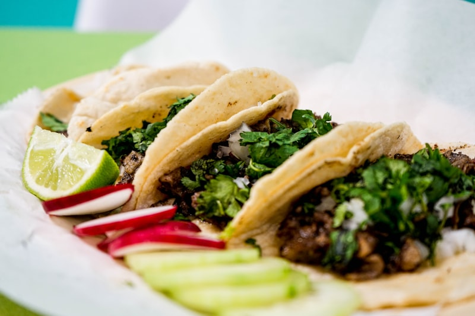
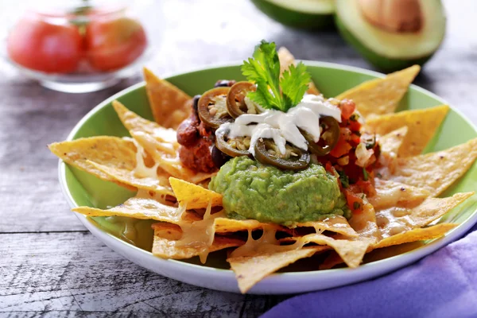

Populaire Gerechten

Tacos Al Pastor
Verse tortilla’s met gekruid varkensvlees, ananas en koriander.

Classic Burrito
Rijst, bonen, vlees naar keuze en verse salsa.

Nachos Supreme
Krokante nachos met kaas, jalapeño, guacamole en tomaat.
Tip: zet je eigen foto’s als tacos.jpg, burrito.jpg en
nachos.jpg in de map img.